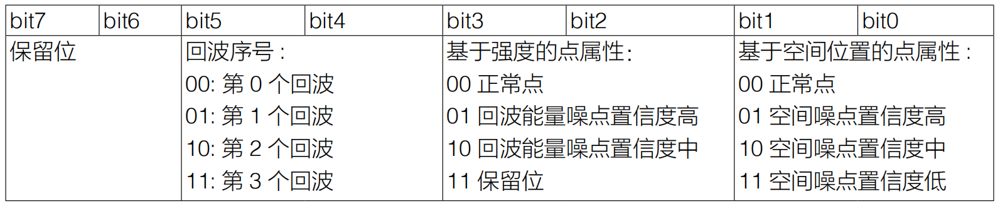

基础教程（一级标题）¶
简介（二级标题）¶
什么是激光雷达？（三级标题）¶
四级标题1¶
四级标题2¶
五级标题1¶
五级标题2¶
六级标题1
六级标题2
正文
以此类推
- 表格写法参考
GFM，示例如下：
| First Header | Second Header |
|---|---|
| Content Cell | Content Cell |
| Content Cell | Content Cell |
- 下表示范了表格内容靠左显示、居中显示和靠右显示的写法:
| Left-Aligned | Center Aligned | Right Aligned |
|---|---|---|
| col 3 is | some wordy text | $1600 |
| col 2 is | centered | $12 |
| zebra stripes | are neat | $1 |
- 图片保存在本地同一个文件夹下
Livox SDK Architecture
Livox的扫描特性简介¶
视场覆盖率介绍¶
激光雷达视场指的是激光雷达所探测的区域，该区域内的目标物体都有可能被检测到。然而，并非视场中的所有物体都能被检测到，原因包括：
- 目标物体距离激光雷达过远或不在检测范围之内，导致物体反射光太弱，无法被识别。
- 在某段时间内，由于激光只能照亮其扫描路径上的物体并测量其距离，不处在该段时间内激光扫描路径上的物体就无法被探测到。
若能优化扫描方法，增大激光束路径所覆盖的区域在视场内的占比，即可降低上述第二种情况出现的概率。因此，视场内激光照射到的区域面积，关系到激光雷达的测量性能。该指标可以定量地用激光雷达视场中被激光探测到的区域的比例，即为视场覆盖率来表征。其计算公式如下：
<table border=”1” class=”docutils”> <thead> <tr> <th>下图为Lidar的扫描视场图，黄色方块表示扫描到的区域，蓝色方块表示未被扫描到的区域：</th> </tr> </thead> <tbody> <tr> <td></td> </tr> </tbody> </table>
非重复式扫描方式¶
Livox激光雷达指标¶
<table border=”1” class=”docutils”> <thead> <tr> <th>Livox的三款激光雷达：Mid-40、Horizon以及Tele-15均采用了非重复扫描方式，具有较高的视场覆盖率，且随着积分时间变长，视场覆盖率也会显著增大，直到接近100%，即视场中几乎所有区域都会被激光束照射到，如下图所示：</th> </tr> </thead> <tbody> <tr> <td>该图同时显示了采用多线机械旋转重复扫描方式的激光雷达的视场覆盖率，其中包括竖直视场角为27°的64线产品、竖直视场角为41°的32线产品和竖直视场角为30°的16线产品。</td> </tr> <tr> <td>可以看出，Mid-40、Horizon及Tele-15的表现十分出色，并随时间推移而达到最优：</td> </tr> </tbody> </table>
- 当积分时间为0.1s时，Mid-40的视场覆盖率与32线产品相近；当积分时间为0.5s时，Mid-40的视场覆盖率与64线产品相当。当积分时间继续增大时，覆盖率继续增大，直至接近100%。
- Horizon在积分时间是0.1s时，覆盖率即与传统64线激光雷达的相当。积分时间0.2s时，视场覆盖率即可达到80% 以上。
- Tele的覆盖率优于市场上常见的多线旋转机械式激光雷达。当积分时间为0.1s时，视场覆盖率可达到90%左右。当积分时间为0.2s时，视场覆盖率接近 100%。 ### Livox的点云属性与惯性坐标系 #### 点云属性
Livox_Lidar可准确感知复杂周围环境，提供详尽点云数据信息，适用于高级驾驶辅助系统、无人驾驶汽车、机器人、直升机、无人机避障及安全巡检等领域。下面以Mid系列和Horizon系列为例介绍Livox_Lidar点云特点及参数：
- Livox Mid-40以及Livox Mid-100通过使用非重复扫描技术，具有较高的视场覆盖率，且随着积分时间的增大，视场覆盖率也会显著增大，探测到视场中的更多细节。下图所示为不同积分时间内（分别为0.1s，0.2s，0.5s和1s时Livox Mid-40和 Mid-100的点云图。每个Livox Mid-100的点云图都可以视为由三个Livox Mid-40的点云图所组成。 Livox Mid-40不同积分时间内点云效果图如下所示： Livox Mid-100不同积分时间内点云效果图如下所示： 下图给出了不同积分时间下Livox Mid-40激光探测测距仪的视场覆盖率，和当前市场上常见的几款多线机械旋转式激光探测测距仪的相关数据。从图中可以看出，当积分时间小于0.1s时，Livox Mid-40的视场覆盖率性能与某32线产品的性能相当；当积分时间增大时，Livox Mid-40的视场覆盖率明显提高而某32线产品的视场覆盖率保持不变。当积分时间是0.5s时，视场覆盖率与某64线产品相当；当积分时间继续增大，达到 1.4s时，视场覆盖率将会接近 100%，即视场中几乎所有区域都会被激光束照射到。
Mid系列点云参数如下表所示：
| 参数名称 | 参数数值 |
|---|---|
| 激光波长 | 905nm |
| 安全级别 | Class 1(IEC 60825-1:2014)人眼安全 |
| 量程(@100klx) | 90m@10%反射率；130m@20%反射率；260m@80%反射率 |
| FOV | Livox Mid-40：38.4°(圆形);Livox Mid-100：98.4°(水平)× 38.4°(竖直) |
| 距离精度(1σ@20m) | 2cm |
| 角度精度 | <0.1° |
| 光束发散角度 | 0.28°(竖直)×0.03°(水平) |
| 数据率 | Livox Mid-40：100,000点/秒;Livox Mid-100：300,000点/秒 |
| 虚警率(@100klx) | <0.01% |
Horizon采用Livox自主研发的高速非重复扫描技术和自主设计的多线封装激光器，同等时间内的点云视场覆盖率是Mid系列的三倍。随着积分时间的增大，点云视场覆盖率还会继续增大，探测到视场中的更多细节。 下面以Horizon在0.1s的扫描图案来说明点云分布。Horizon在中间区域的扫描密度大，扫描线间隔平均约0.2°（主要在0.1°-0.3°范围内），超过常见机械旋转式64线激光雷达。两边圆形区域的扫描密度比中间低，扫描线间隔平均在0.4°（主要在0.2°-0.8°范围内），0.1s的综合扫描效果与常见机械旋转式64线激光雷达相当。 0.1s时间内Horizon点云分布图如下：（坐标单位：度） 下面为不同积分时间内Horizon的点云图：
下图给出了不同积分时间下Horizon的视场覆盖率，和当前市场上常见的几款多线机械旋转式激光探测测距仪的对比。从图中可以看出，当积分时间小于0.1s时，Horizon的视场覆盖率接近60%，即与常见64线机械旋转式激光雷达相当；当积分时间继续增大，达到0.5s左右时，视场覆盖率将会接近100%，即视场中几乎所有区域都会覆盖到。
Horizon系列点云参数如下表所示：
| 参数名称 | 参数数值 |
|---|---|
| 激光波长 | 905nm |
| 安全级别 | Class 1(IEC 60825-1:2014)人眼安全 |
| 量程(@100klx) | 90m@10%反射率；130m@20%反射率；260m@80%反射率 |
| FOV | 81.7°（水平)×25.1°（竖直) |
| 距离随机误差 | （1σ@20m）<2cm |
| 角度随机误差 | 1σ<0.05° |
| 光束发散角度 | 0.28°(竖直)×0.03°(水平) |
| 数据率 | 可配置第一回波或最强回波时：240,000 点/秒；双回波时：480,000点/秒 |
| 虚警率(@100klx) | <0.01% |
坐标系¶
Livox Lidar支持使用Livox Viewer查看实时点云数据，并通过软件开发工具包（SDK）对所获取的点云数据进行个性化应用。在了解Livox Viewer及SDK的详细使用方法前，用户需了解Livox 激光探测测距仪的直角坐标及球坐标定义如下：
<table border=”1” class=”docutils”> <thead> <tr> <th>-</th> <th>Livox Mid-40坐标定义：</th> </tr> </thead> <tbody> <tr> <td></td> <td></td> </tr> </tbody> </table>
- Livox Mid-100坐标定义：
- Livox Horizon中内置IMU，点云坐标系O-XYZ和IMU坐标系O-X’Y’Z’的定义如下图所示：|Livox\_Horizon\_coordinate\_system| 其中IMU坐标原点O’在点云坐标系O-XYZ上的坐标为（-55.112，-22.26，29.70）（单位：mm）
点云数据¶
点云数据是激光探测测距仪于视场角中于被测物表面所探测到的所有点云的总和。每个点云包含以下信息。
- 目标反射率：以0至255表示。其中0至150对应反射率介于0至100%的漫散射物体；而151至255对应全反射物体。
- 坐标信息：Livox Horizon的坐标信息可表示为直角坐标（x，y，z）或球坐标（r，θ，φ），其直角坐标和球坐标的对应关系如下图所示。如果前方无被探测物体或者被探测物体超出量程范围（例如600m），在直角坐标系下，点云输出为（0，0，0）；在球坐标系下，点云输出为（0，θ，φ）。点云数据中球坐标与直角坐标关系如下所示：
- 标记（Tag）：主要指示多回波信息及噪点信息。标记信息的格式如下：  每个标记信息由1字节组成，该字节中bit7和bit6为第一组，bit5和bit4为第二组，bit3和bit2为第三组，bit1和bit0为第四组。 第二组表示的是该采样点的回波次序。由于Livox Horizon采用同轴光路，即使外部无被测物体，其内部的光学系统也会产生一个回波，该回波记为第0个回波。随后，若激光出射方向存在可被探测的物体，则最先返回系统的激光回波记为第1个回波，随后为第2个回波，以此类推。如果被探测物体距离过近（例如1.5m），第1个回波将会融合到第0个回波里，该回波记为第0个回波。 第三组基于回波能量强度判断采样点是否为噪点。通常情况下，激光光束受到类似灰尘、雨雾、雪等干扰产生的噪点的回波能量很小。目前按照回波能量强度大小将噪点置信度分为二档：01表示回波能量很弱，这类采样点有较高概率为噪点，例如灰尘点；10表示回波能量中等，该类采样点有中等概率为噪点，例如雨雾噪点。噪点置信度越低，说明该点是噪点的可能性越低。 第四组基于采样点的空间位置判断是否为噪点。例如，激光探测测距仪在测量前后两个距离十分相近的物体时，两个物体之间可能会产生拉丝状的噪点。目前按照不同的噪点置信度分为三档，噪点置信度越低，说明该点是噪点的可能性越低。 ### Livox应用案例简介
如何获取数据？¶
电器连接与结构安装参考¶
- 电器：电源电压功率范围，线材设计参考
- 机械结构：雷达安装方向，防护设计指标，线材折弯半径 ### 单雷达数据采集
使用Livox Viewer采集数据¶
以Livox Mid-40为例：
- 软件依赖：Ubuntu 16.04、Livox_Viewer
- 硬件部分：Livox-Mid 40、电源转接插座2.0或连接盒、以太网线、PC。
- 连接：
物理连接如下图所示
连线及IP配置见Livox官网Livox觅道Mid用户手册“连线”部分，下载地址如下：
- 采集：完成硬件连接后，在Ubuntu下打开Livox-Viewer，下载地址如下所示：<>启动终端后进入到解压缩后文件夹的根目录，运行指令 >./livox_viewer.sh 即可启动）
若正确的连接了Lidar并完成了IP配置，此时Livox_Viewer界面显示如下，左侧显示已连接的Livox_Lidar的型号和15位广播码。
点击按钮启动Lidar,再点击播放按钮即可显示Lidar所采集到的点云图,如下所示：
采集成功后，可点击工具栏上的录制按钮进行lvx格式文件的录制，暂停播放或再次点击此按钮结束录制。
工具栏中包含多个按钮，可进行点云着色方案、点样式大小、帧积分时长等功能设置，详细介绍可见官网Livox Viewer用户手册。其下载地址为：https://www.livoxtech.com/3296f540ecf5458a8829e01cf429798e/downloads/Livox%20Viewer/Livox%20Viewer%20%E7%94%A8%E6%88%B7%E6%89%8B%E5%86%8C.pdf
Livox Viewer录制并保存文件的默认格式为lvx，在菜单中选择File->Save as可将当前点云另存为.csv或las文件。
使用ROS采集¶
以Livox Mid-40为例：
- 软件依赖：ubuntu 16.04、ROS、Livox-SDK、Livox_ROS_driver
- 硬件部分：Livox-Mid 40 × 1、电源转接插座2.0或连接盒 × 1、以太网线（百兆或千兆） × 1、PC × 1
- 连接：
若对连线及IP配置存在疑问，可参考Livox官网Livox觅道Mid用户手册“连线”部分，下载地址如下：
- 采集：首先确认已从Git克隆Livox-SDK
$ git clone https://github.com/Livox-SDK/Livox-SDK.git
完成Lidar硬件及IP配置部分，在以下文件路径下打开终端窗口：
$ ../Livox_SDK/build/sample/lidar_lvx_file
执行以下命令连接Lidar，并设定记录的点云数据的持续时间为10s:
$ ./lidar_lvx_sample -c "此处为已连接的Lidar的15位广播码" -t 10

save_lvx_data_by_SDK_01

save_lvx_data_by_SDK_02
成功执行后，当前路径下即可生成采集好的lvx文件

save_lvx_data_by_SDK_03
多雷达数据采集（使用交换机）¶
多雷达数据采集（使用览沃枢纽 Livox Hub）¶
连接及配置¶
以一台Livox Mid-40和一台Livox Horizon为例：
- 软件部分：ubuntu 16.04、ROS、Livox-SDK、Livox ROS driver（此部分驱动的下载和安装详细过程见”4.开发者资料汇总->1.官方开源资料汇总->1.驱动”部分）
- 硬件部分：Livox Mid-40 × 1、Livox Horizon × 1、Livox Hub × 1、千兆网线 × 1、Livox Hub电源线 × 1、Livox雷达电池 × 1、PC × 1。
- 连线和IP配置：
Livox Hub通过以太网进行数据通信，采用UDP通信协议，支持两种IP地址配置：静态IP地址和动态IP地址，出厂时默认采用动态主机配置协议（DHCP）分配IP地址。根据IP地址设置形式不同，其物理连接方式也稍有差别。
- 采用静态IP地址进行连接时，其物理连接如下图所示：
- 采用动态IP地址进行连接时，其物理连接如下图所示：
Livox Hub出厂时默认采用动态主机配置协议（DHCP）分配IP地址，若希望使用静态IP进行连接，需连接路由器进行设置，步骤如下：
1.按照上图动态IP地址连接方式，通过路由器连接Livox Hub、Livox Lidar、PC和电源。
2.在电脑上运行Livox Viewer，点击打开设备管理器。选择Livox Hub，点击打开设备属性页面。在设备属性页面中将Livox Hub的IP地址设置为静态IP地址。注意Livox Hub的静态IP地址应设置为192.168.1.X（其中，X为2~233之间的任意数字）。
3.设置完毕后，断开Livox Hub的所有连接。
4.若Livox Hub为静态IP模式，则电脑也应设置为静态IP模式（若电脑采用动态IP模式，可能导致无法读取到Livox Hub）。电脑的静态IP地址应设置为192.168.1.X（其中，X为2~233之间的任意数字），并且不可与连接的Livox Hub的IP地址相同。
若对Hub的连线及IP配置存在疑问，可参考Livox官网“Livox Hub用户手册 v1.2”的“连接”部分，下载地址如下：
本示例使用静态IP配置，如下图所示：
Livox Hub上最多可同时接入9个Livox Lidar，本示例连接了一台Livox Horizon和一台Livox Mid-40，若希望进行更多台Lidar同时采集，可直接进行连接。
使用ROS进行数据采集¶
连接成功后，在本地的ws_livox路径下编译：
catkin_make
更新当前ROS包环境：
source ./devel/setup.bash
使用ROS launch文件加载LIvox ros driver
roslaunch livox_ros_driver livox_hub_rviz.launch
览沃驱动程序中所有的 launch 文件都位于 “ws_livox/src/livox_ros_driver/launch” 路径下，不同的 launch 文件拥有不同的配置参数值，可根据不同的使用场景，启动不同的launch文件（详细launch配置文件描述可见https://github.com/Livox-SDK/livox_ros_driver/blob/master/README_CN.md4.1 launch配置文件描述部分）
这里选用的livox_hub_rviz.launch将自动连接Livox Hub设备、向外发布pointcloud2格式的点云数据并自动加载rviz显示实时点云数据，如下图所示：
ros_hub_scanning
红色部分点云为Livox Horizon扫描到的图像，紫色部分为Livox Mid-40扫描到的图像
使用Livox Viewer采集数据¶
连接成功后，在Livox Viewer文件夹内打开终端，运行下列命令打开Livox Viewer程序：
./livox_viewer.sh
点击打开设备管理器，选择Livox Hub，第一次连接时可能会显示Livox Hub的IP地址与PC的IP地址不匹配。若已经按照上面步骤将Livox Hub和PC进行了静态IP的配置，可点击工具栏Network Adapter—refresh Adapter刷新配置。
打开Hub按钮并点击播放，即可显示多雷达实时扫描数据，如下图所示：

two_lidar_scanning
黄色部分点云为Livox Horizon扫描的数据，蓝色部分点云为Livox Mid-40扫描到的数据。
与单雷达数据录制类似，可点击工具栏上的录制按钮进行lvx格式文件的录制，暂停播放或再次点击此按钮结束录制。
数据格式及其转换¶
Livox Lidar数据格式介绍¶
Livox lidar支持多种方式连接和存储点云数据，其常用格式如下：
Livox lidar可直接保存的文件格式¶
- bag文件：bag文件是ROS系统常用的点云数据存储格式，可记录lidar扫描过程中每帧点云数据并动态显示。使用ROS连接Livox lidar可扫描并存储此格式的数据。
- lvx文件：lvx文件是使用Livox Viewer连接Livox Lidar后存储的点云格式文件，可在Livox Viewer中查看并记录。
- csv文件：逗号分隔值文件，使用Livox Viewer连接Livox Lidar后可将点云格式文件保存为csv格式。
- las文件：可用以保存Lidar点数据记录，使用Livox Viewer连接Livox Lidar后可将点云格式文件保存为las格式。
Livox lidar不可直接保存的文件格式¶
- pcd文件：点云格式文件，记录某一帧的点云数据。Livox Lidar记录的数据无法直接保存为pcd格式，需进行转化。
数据格式转化¶
lvx文件转rosbag文件并播放¶
- 软件依赖：Ubuntu 16.04、ROS、livox_ros_driver
livox_ros_driver支持将lvx pointcloud数据文件转换为rosbag文件。
在../ws_livox下打开终端，编译：
$ catkin_make
使用如下命令更新当前ROS包环境：
$ source ./devel/setup.bash
再使用以下命令：
$ roslaunch livox_ros_driver lvx_to_rosbag.launch lvx_file_path:=""
在上述命令中双引号内填写本地lvx数据文件路径即可成功运行，转换成功后将在上述路径下生成同名的rosbag格式文件。
得到转化成功后的test.bag文件后，可使用rviz可视化工具播放，步骤如下：
启动ROS：
$ roscore
运行rviz：
$ rosrun rviz rviz
成功打开rviz后，需添加PointCloud2并选择相应的topic，可使用rosbag info <filename.bag>命令查看相应bag文件对应的topic，如下所示：
rosbag_info
在rviz中添加相应topic：
然后运行rosbag，即可播放：
$ rosbag play <test.bag>
lvx文件转.las或.csv文件¶
- 软件依赖：Livox Viewer（win or ubuntu）
Livox Viewer提供了一个将lvx 文件整体转为一个las 或者csv 文件的转换工具,方便用户处理数据使用。菜单栏中选择 Tools->File Converter 即可打开此工具。
rosbag文件转pcd文件¶
参考：http://wiki.ros.org/pcl_ros
软件依赖：Ubuntu 16.04、ROS、PCL
运行ros：
$ roscore
在.bag文件存储路径下打开终端并运行命令：
$ rosrun pcl_ros bag_to_pcd <input_file.bag> <topic> <output_directory>
其中<input_file.bag>为需转换的bag文件名称，<topic>为该bag文件的topic信息，<output_directory>为转化完成后的pcd文件存放地址。
bag_to_pcd_pcddata
在对应文件夹下，可找到由rosbag文件转化而来的每一帧pcd文件，其文件名为当前帧的时间戳：
转换完成后，可使用pcl_viewer查看pcd文件。命令如下：
$ pcl_viewer <filename.pcd>
需要说明的是，PCL内置的bag_to_pcd转化脚本仅支持PointCloud2格式，不支持CustomMsg格式。
lvx文件转pcd文件¶
多传感器数据（相机/RTK/IMU）的采集以及同步¶
FAQ¶
开发者资料汇总¶
官方开源资料汇总¶
（驱动，源代码，文档，手册，数据集） ### 驱动 #### Livox-SDK
开发工具及开源代码¶
LOAM_Viewer¶
- Livox Viewer 0.7.0 (64bit) - Windows下载地址: https://www.livoxtech.com/3296f540ecf5458a8829e01cf429798e/downloads/Livox%20Viewer/Livox%20Viewer%200.7.0.zip
- Livox Viewer 0.7.0(64bit) - Ubuntu 16.04下载地址: https://www.livoxtech.com/3296f540ecf5458a8829e01cf429798e/downloads/Livox%20Viewer/Livox_Viewr_For_Linux_Ubuntu16.04_x64_0.7.0.tar.gz
Livox_Horizon_LOAM¶
LOAM_Horizon Calibration¶
开发案例¶
livox_scanner¶
livox_high_precision_mapping¶
livox_camera_lidar_calibration¶
文档与手册¶
LOAM_Viewer用户手册¶
延长线转接盒安装模型¶
Livox点云特性¶
Livox_Horizon相关¶
- 浩界Horizon用户手册下载地址： https://terra-1-g.djicdn.com/65c028cd298f4669a7f0e40e50ba1131/Download/update/Livox%20Horizon%20User%20Manual%20(CN).pdf
- 浩界Horizon快速入门指南下载地址： https://www.livoxtech.com/3296f540ecf5458a8829e01cf429798e/assets/horizon/Livox%20Horizon%20%E5%BF%AB%E9%80%9F%E5%85%A5%E9%97%A8%E6%8C%87%E5%8D%97%EF%BC%88%E5%A4%9A%E8%AF%AD%E8%A8%80).pdf
Livox_Mid相关¶
- Livox觅道系列用户手册v1.0下载地址： https://terra-1-g.djicdn.com/65c028cd298f4669a7f0e40e50ba1131/Download/update/Livox%20Mid%20Series%20User%20Manual%20(CN).pdf
- Livox觅道-40 快速入门指南v1.4下载地址： https://www.livoxtech.com/3296f540ecf5458a8829e01cf429798e/downloads/20190530/Livox%20Mid-40%20Quick%20Start%20Guide%20multi%20v1.4.pdf
- Livox觅道-100快速入门指南v1.4下载地址： https://www.livoxtech.com/3296f540ecf5458a8829e01cf429798e/downloads/20190530/Livox%20Mid-100%20Quick%20Start%20Guide%20multi%20v1.4.pdf
- 觅道-40 3D Model and FOV Shape下载地址： https://www.livoxtech.com/3296f540ecf5458a8829e01cf429798e/downloads/MID-40%203D%20Model%20and%20FOV%20Shape.zip
- 觅道-100 3D Model and FOV Shape下载地址： https://www.livoxtech.com/3296f540ecf5458a8829e01cf429798e/downloads/MID-100%203D%20Model%20and%20FOV%20Shape.zip
Livox_Tele相关¶
- 泰览Tele-15 3D Model and FOV Shape下载地址： https://terra-1-g.djicdn.com/65c028cd298f4669a7f0e40e50ba1131/Download/Tele-15_shell_FOV_3D.stp
- 泰览Tele-15 W/O Dissipation Module 3D Model下载地址： https://terra-1-g.djicdn.com/65c028cd298f4669a7f0e40e50ba1131/Download/Tele-15_withou_self_dissipation_module.stp
Livox_Hub相关¶
- Livox Hub用户手册v1.2下载地址： https://terra-1-g.djicdn.com/65c028cd298f4669a7f0e40e50ba1131/Download/Livox%20%E6%9E%A2%E7%BA%BD%E7%94%A8%E6%88%B7%E6%89%8B%E5%86%8C.pdf
- Livox Hub快速入门指南v1.0下载地址： https://www.livoxtech.com/3296f540ecf5458a8829e01cf429798e/downloads/20190318/Livox%20Hub%20Quick%20Start%20Guide%20v1.0.pdf
- Livox Hub 3D模型下载地址： https://www.livoxtech.com/3296f540ecf5458a8829e01cf429798e/downloads/20190318/Livox%20Hub%203D%20Model.zip
数据集¶
Livox_Horizon点云数据¶
- 数据包1下载地址： https://terra-1-g.djicdn.com/65c028cd298f4669a7f0e40e50ba1131/Download/Horizon_%E9%81%93%E8%B7%AF%E5%9C%BA%E6%99%AF%E7%82%B9%E4%BA%91%E6%95%B0%E6%8D%AE_%E5%AE%98%E7%BD%91.lvx
- 数据包2下载地址： https://www.livoxtech.com/3296f540ecf5458a8829e01cf429798e/downloads/20200107/Sample%20Point%20Cloud%20of%20Horizon.zip
非官方开源资料汇总¶
论文资料¶
- 论文名称：Loam_livox: A fast, robust, high-precision LiDAR odometry and mapping package for LiDARs of small FoV核心思想：针对Livox Pattern和小FOV特性，改进了Loam的特征筛选部分和Mapping部分算法，有效提高了定位与建图精度。
- 论文名称：A fast, complete, point cloud based loop closure for LiDAR odometry and mapping核心思想：结合Livox点云数据，构建Cell地图。对Cell地图中的特征线/面进行直方图构建作为特征指纹。以此为依据构建鲁棒闭环检测。
论文名称：Initial investigation of a low-cost automotive lidar system
论文下载地址：https://discovery.uvl.ac.uk/id/eprint/10087172/1/issprs-archives-XLII-2-W17-233-2019.pdf
- 论文名称：Situation and prospect of light and miniature UAV-borne LiDAR
- 论文名称：Autonomous Dam Surveillance Robot System Based on Multi-Sensor Fusion
论文下载地址：https://www.mdpi.com/1424-8220/20/4/1097
- 论文名称：A Survey of Simultaneous Localization and Mapping with an Envision in 6G Wireless Networks
论文下载地址：https://arxiv.org/abs/1909.05214
- 论文名称：A Multisensor Data Fusion Approach for Simultaneous Localization and Mapping
论文下载地址：https://ieeexplore.ieee.org/abstract/document/8916930